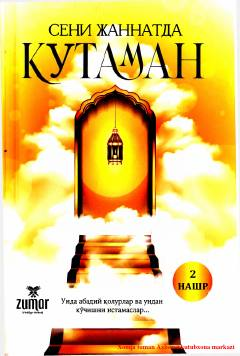

SJTurk adabiyotidan tanlangan hayotiy va ta'sirli qisqa hikoyalar to'plami.
Bu kitob turk adabiyotidan tanlangan qisqa hikoyalar to'plamidir. Hikoyalar insoniy his-tuyg'ular, hayotiy saboqlar va ma'naviy xulosalar bilan boyitilgan. Kitob Umida Adizova tomonidan turk tilidan o'zbek tiliga tarjima qilingan va 2022-yilda Toshkentda nashr etilgan.